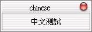

| 如果您的作業環境是中文環境，並想讓Qt視窗程式顯示中文，最簡單的方法就是使用Unicode轉換，這必須使用到QTextCodec類別的方法，其定義於qtextcodec.h中。 QTextCodec提供codecForName()方法，可以讓我們指定國際化文字名稱，其中正體（體）中文來說是zh_TW.Big5或Big5， 我們利用這個方法所傳回的QTextCodec物件來進行中文字串顯示，使用其toUnicode()方法將Big5碼轉換為Unicode，然後當作一 個QString使用，下面這個程式是個簡單的實作： #include <qapplication.h> 其中我們使用這兩行程式來指定中文的顯示： QTextCodec *codec = QTextCodec::codecForName("zh_TW.Big5");
wm.setText(codec->toUnicode("中文測試")); 如果沒使用這兩行的話，直接指定中文字串將會出現亂碼；程式的執行結果如下所示：  |
|